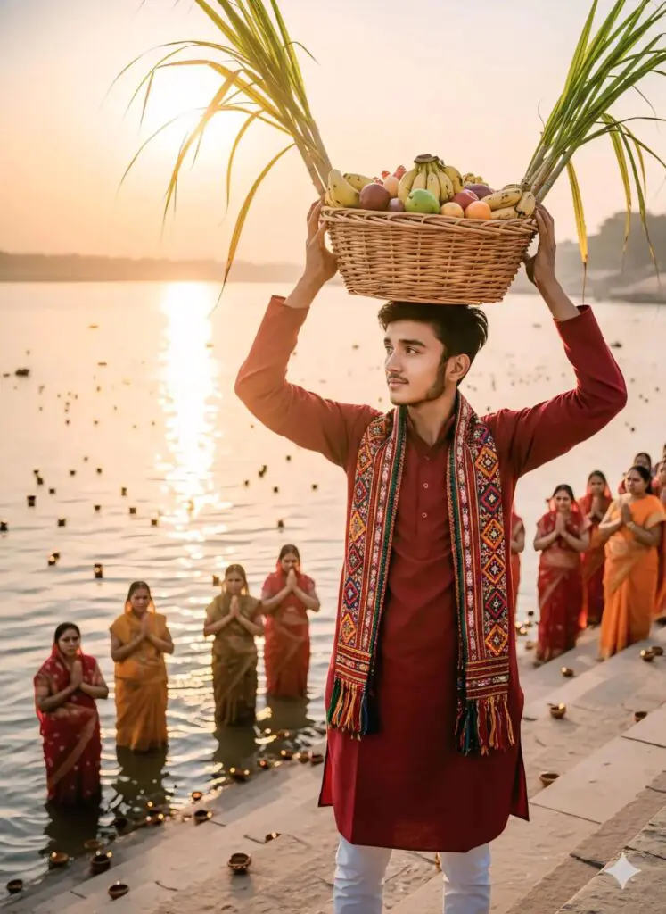
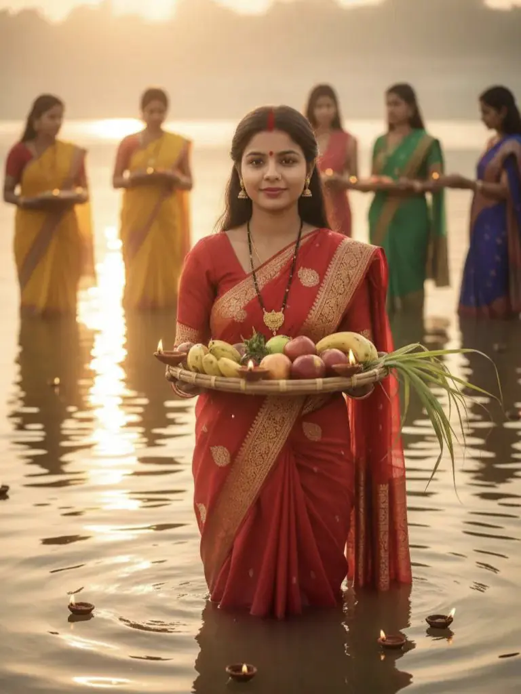

Want more awesome prompts?
Join our community and get the latest viral prompts daily.
Follow on Instagram
? AI PROMPT
Chhath pooja Prompt: Create an image of chhath Puja celebration a festival of bihar.this picture is of evening and use the image provided of the man is lighting the lamp at Ghat, He's full of gratitude and devotion the ghats are all decorated with lights and soups for chath Puja and for celebration he's wearing a light olive kurta and white pajama with thread details this picture is Full of grace and emotion towards the festival

? AI PROMPT
A cinematic photo of a boy celebrating Chhath Puja at the ghats, standing in the same position with a traditional red kurta and colorful embroidered scarf, holding a wicker basket of fruits and sugarcane above his head. The glowing diyas are floating in the river, golden reflections shimmering on the water, while people in the background pray with devotion.Premium ultra-HD detail, festive aura, divine lighting, cinematic colors.

? AI PROMPT
Create Chhath pooja Prompt: Create an image of chhath Puja celebration a festival of bihar. this picture is of evening and use the image provided of the man is lighting theghats are all decorated with lights and soups for chath Puja and for celebration he's wearing a maroon kurta and white pajama with thread details this picture is Full of grace and emotion towards the festival (Keep the face same as attached 100% realistic)

? AI PROMPT
image of chath puja celebration afestival of bihar. This picture is of evening and use the image provided of the girl where shes holding the rectangle bihari traditional soup full of fruits thekua diya and standing seating in the water at the ghat her hair is open and she's full of gratitude and devotion. The ghats are all decorated with lights and soups for chath puja and for celebration. She's wearing cherry red banarasi silk saree with jewelry pinteresty has open silky hair.

? AI PROMPT
A beautiful Indian woman wearing a traditional yellow saree with red and golden border, standing gracefully in knee-deep river water during Chhath Puja. She holds a soop (bamboo basket) filled with fruits, sugarcane, and glowing diyas, smiling softly with devotion. The warm sunlight reflects on the calm river, creating a golden aura around her. Other women in colorful sarees are seen offering prayers in the background. The atmosphere is spiritual, festive, and peaceful - capture the.
? AI PROMPT
Create a photo of Chhath Puja, a festival in Bihar. This photo is taken in the morning, with sunlight streaming in. Use a photo of a couple. Both are standing in the water on a ghat, holding a traditional rectangular Bihari bowl filled with fruits, thekua, and a lamp. The girl’s hair is open and she wears a vermillion nose cap, and both are filled with gratitude and devotion. The ghats are decorated with lights and bowls for Chhath Puja and the celebration. The girl is wearing a red sari, and the boy is wearing a yellow pajama kurta. The girl has a thread embellishment on a necklace, with Pinterest aesthetics, and her hair is open and silky. The photo is full of grace and spirit of the festival.

? AI PROMPT
A serene Chhath Puja scene at sunrise at the steps (ghats) of the Ganga river, with visible traditional stone steps (sidhiyon wali ghats) leading into the water. A young South Asian man is standing barefoot on the ghat, wearing a light pink sherwani/ achkan with fine subtle patterns over a solid pink kurta with fabric-covered buttons. He is holding a beautifully decorated puja thali in one hand, filled with fruits, diyas, sugarcane, and flowers, while sprinkling water or flowers with the other hand in a ritualistic gesture. His face is directed toward the camera at a slight cross-angle, showing a calm and focused expression. His face exactly matches the uploaded image, and his hairstyle is perfectly styled, neat, and voluminous. Beside him, a beautiful South Asian woman is standing, hands folded or gently in an offering gesture, adorned in a pastel pink V-deep neck blouse with golden circular pearl floral patterns, matching pastel pink lehenga with heavy golden circular pearl embroidery and floral designs, and a fuchsia draped choli/dupatta elegantly covering her head as a ghunghat. Her face is directed toward the camera. Around them, several devotees (men and women) are standing barefoot on the ghats, wearing bright sarees and dhotis, offering prayers and holding decorated earthen lamps (diyas) floating on the river. The Ganga reflects the golden and orange hues of the sun. Banana leaves, fruits, sugarcane, and colorful traditional offerings are arranged neatly on the steps. Soft morning mist rises from the water, creating a peaceful, spiritual, and festive atmosphere. Ultra-realistic, hyper-detailed, cinematic lighting, 8K resolution, capturing devotion and cultural richness of Chhath Puja at Ganga Ghat.